代表案例视频与关键帧
这是按机制选取的案例，不是随机样本或全部视频。得分取原生回执。截图时刻是编码视频时间，不是完整墙钟；阶段分也不一定等于最后一帧的持续状态。
M01_feedback_partial
增强反馈候选在同一诊断布局得到15分，完整成功=false；展示执行推进，不代表独立泛化。
任务 classify_objects；条件 augmented_1；布局 4；split exposed_development；Score 15.0；success False
策略/执行版本、原视频与回执SHA见媒体索引；机位 head。
frame 0；编码时间 0.0s。此帧为过程示例，整回合结论见上方及原始评分。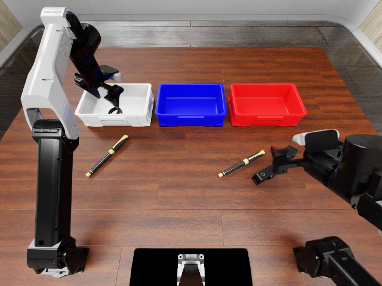
frame 1099；编码时间 43.96s。此帧为过程示例，整回合结论见上方及原始评分。 M02_lift_gate_stop
候选在抬升观测判据后结束；名义Z不能作为动态抬升证据，物理是否抓起要另查。
任务 classify_objects；条件 augmented_3；布局 4；split exposed_development；Score 0.0；success False
策略/执行版本、原视频与回执SHA见媒体索引；机位 head。
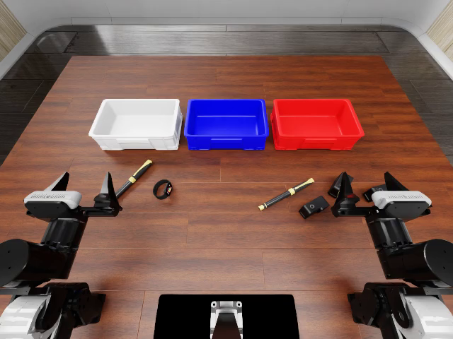
frame 0；编码时间 0.0s。此帧为过程示例，整回合结论见上方及原始评分。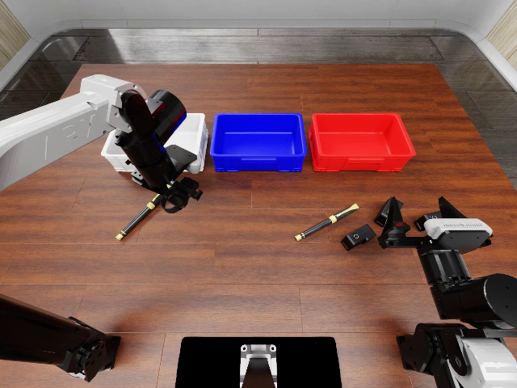
frame 1099；编码时间 43.96s。此帧为过程示例，整回合结论见上方及原始评分。M03_released_skill_partial
完整发布技能进入complete_hold，但原生仅40分、success=false；程序结束不等于任务成功。
任务 classify_objects；条件 released_complete_controller；布局 4；split exposed_development；Score 40.0；success False
策略/执行版本、原视频与回执SHA见媒体索引；机位 head。
frame 0；编码时间 0.0s。此帧为过程示例，整回合结论见上方及原始评分。frame 1099；编码时间 43.96s。此帧为过程示例，整回合结论见上方及原始评分。
M04_carry_loss
单周期候选：所有移动调用可返回，物体却未稳定送入目标篮筐；物体共动诊断见报告。
任务 classify_objects；条件 single_cycle；布局 0；split exposed_development；Score 0.0；success False
策略/执行版本、原视频与回执SHA见媒体索引；机位 head。
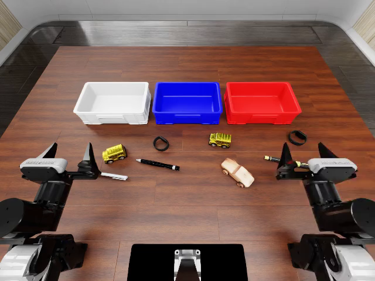
frame 0；编码时间 0.0s。此帧为过程示例，整回合结论见上方及原始评分。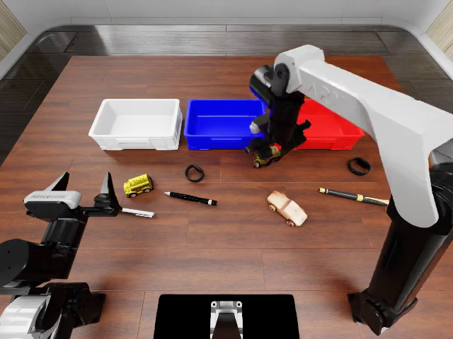
frame 36；编码时间 1.44s。此帧为过程示例，整回合结论见上方及原始评分。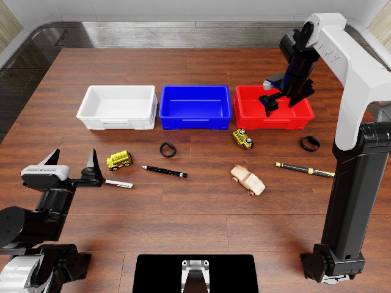
frame 1099；编码时间 43.96s。此帧为过程示例，整回合结论见上方及原始评分。M05_cleanup_delivery
发布参照在末端检查异常后的清理张爪中送达物体；不能算正常完成的搬运返回。
任务 classify_objects；条件 released_first_basket_cycle；布局 0；split exposed_development；Score 0.0；success False
策略/执行版本、原视频与回执SHA见媒体索引；机位 head。
frame 0；编码时间 0.0s。此帧为过程示例，整回合结论见上方及原始评分。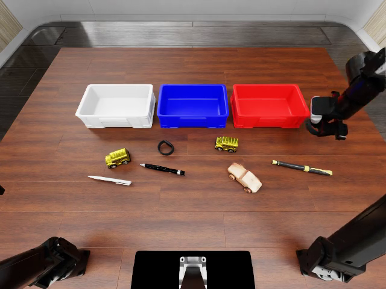
frame 74；编码时间 2.96s。此帧为过程示例，整回合结论见上方及原始评分。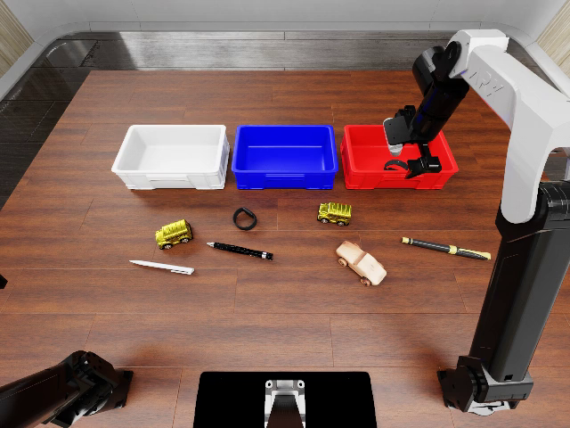
frame 1099；编码时间 43.96s。此帧为过程示例，整回合结论见上方及原始评分。 M06_heldout_control
独立布局匹配对照：原目标规则，原生0分。与M07同候选源码、仅目标规则开关不同。
任务 classify_objects；条件 target_control；布局 1；split heldout；Score 0.0；success False
策略/执行版本、原视频与回执SHA见媒体索引；机位 head。
frame 0；编码时间 0.0s。此帧为过程示例，整回合结论见上方及原始评分。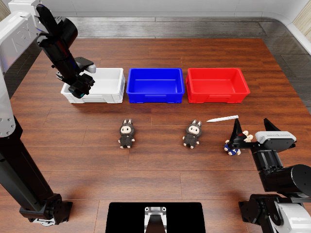
frame 1099；编码时间 43.96s。此帧为过程示例，整回合结论见上方及原始评分。 M07_heldout_offset
独立布局人工XY目标修正，原生15分、success=false；属于人工修正，不是System2自主收益。
任务 classify_objects；条件 target_offset；布局 1；split heldout；Score 15.0；success False
策略/执行版本、原视频与回执SHA见媒体索引；机位 head。
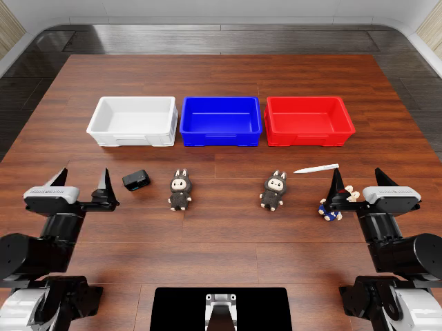
frame 0；编码时间 0.0s。此帧为过程示例，整回合结论见上方及原始评分。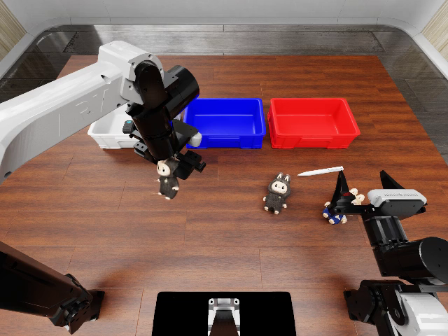
frame 1099；编码时间 43.96s。此帧为过程示例，整回合结论见上方及原始评分。M08_pickup_success
独立抓取任务的代表成功：原生评价要求把目标抬升10cm。此例不证明稳定运输或完整分类能力。 此回合自然结束；同cohort另一个布局因轨迹偏离中断，无原生终态分数，未重试。
任务 general_pickup；条件 parent；布局 2；split heldout；Score 100.0；success True
策略/执行版本、原视频与回执SHA见媒体索引；机位 head。
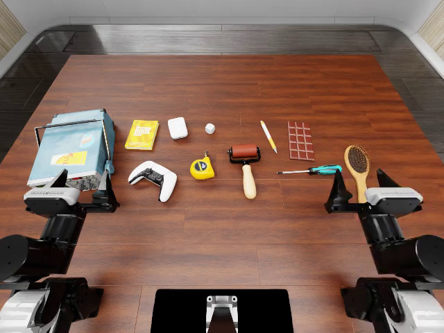
frame 0；编码时间 0.0s。此帧为过程示例，整回合结论见上方及原始评分。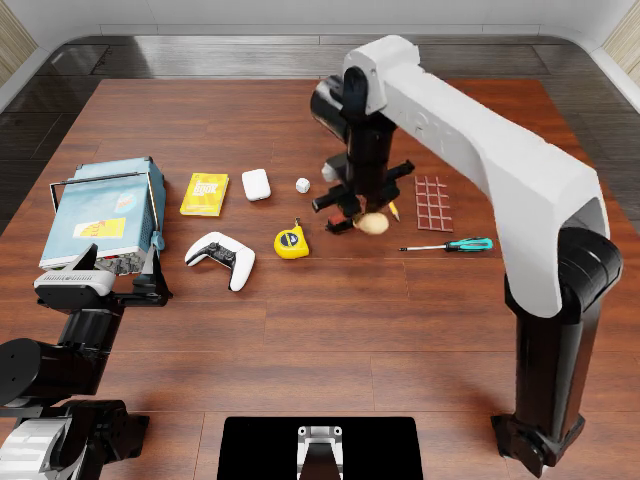
frame 38；编码时间 1.52s。此帧为过程示例，整回合结论见上方及原始评分。M09_pickup_failure
独立抓取任务的代表失败。与成功例可能属于不同布局；仅用于展示过程，不用两个视频估计成功率。 此回合自然结束；同cohort另一个布局因轨迹偏离中断，无原生终态分数，未重试。
任务 general_pickup；条件 parent；布局 0；split heldout；Score 0.0；success False
策略/执行版本、原视频与回执SHA见媒体索引；机位 head。
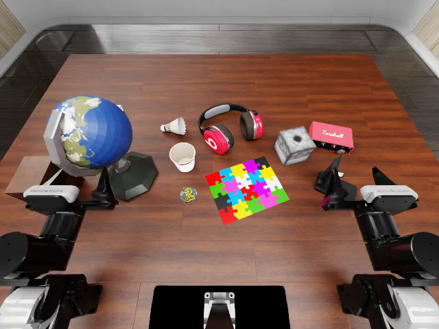
frame 0；编码时间 0.0s。此帧为过程示例，整回合结论见上方及原始评分。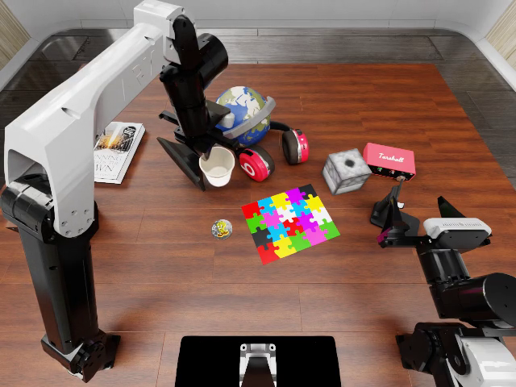
frame 199；编码时间 7.96s。此帧为过程示例，整回合结论见上方及原始评分。M10_classify_heldout
分类父策略独立布局的最高分代表（同分取最小布局ID）。完整分布见数据，视频不单独构成改进证据。 此回合自然结束；同cohort另一个布局因轨迹偏离中断，无原生终态分数，未重试。
任务 classify_objects；条件 parent；布局 0；split heldout；Score 15.0；success False
策略/执行版本、原视频与回执SHA见媒体索引；机位 head。
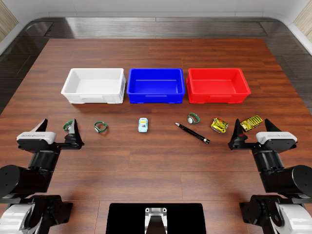
frame 0；编码时间 0.0s。此帧为过程示例，整回合结论见上方及原始评分。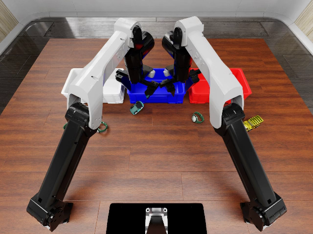
frame 1099；编码时间 43.96s。此帧为过程示例，整回合结论见上方及原始评分。